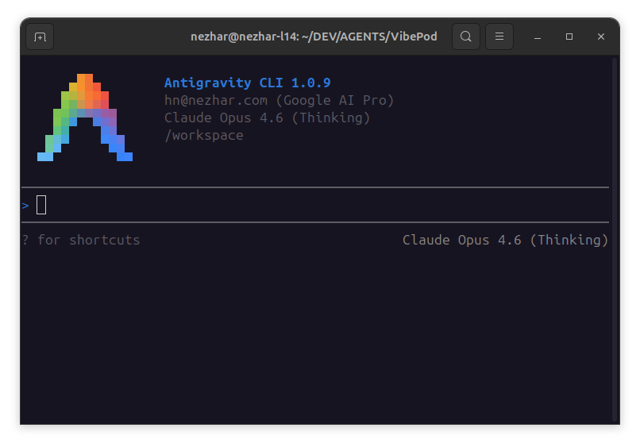

Antigravity in the agent matrix
The new agy agent runs Google's Antigravity CLI in the same isolated VibePod container workflow as the other supported tools. Credentials and configuration persist under ~/.config/vibepod/agents/agy/ on the host and mount at /home/agy inside the container.
The default image is vibepod/agy:latest. Use VP_IMAGE_AGY for one-off image overrides or the normal per-agent config block for persistent image customization.
Example commands
vp run agy
vp n
vp run agy --ikwid
VP_IMAGE_AGY=vibepod/agy:latest vp run agyRelease details
VibePod 0.15.0 documents the vp n shortcut, the --dangerously-skip-permissions IKWID flag for Antigravity, the VP_IMAGE_AGY override, and the new Antigravity screenshot asset used across docs and the website.
